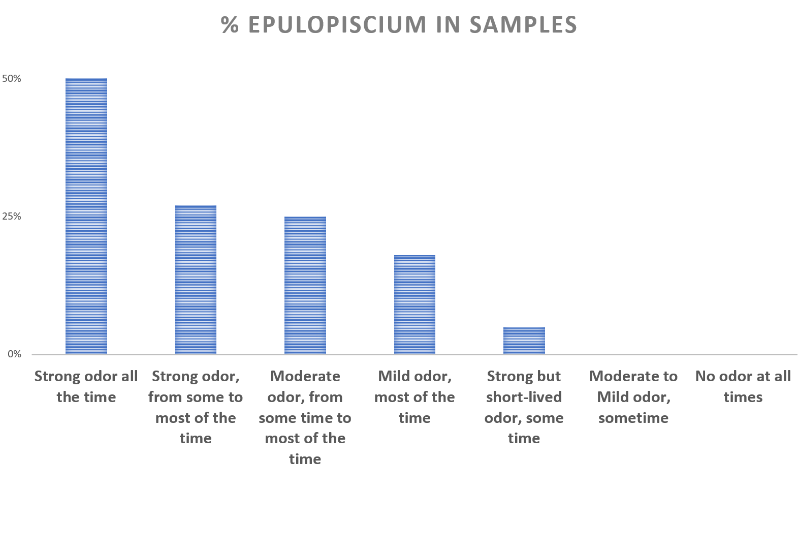

Diseases and conditions caused by microorganisms can be difficult to diagnose. Even in such seemingly simple case as avian flu there could be many different infectious agents causing it, so new molecular diagnostic techniques are constantly developed and refined.
We don't have all our test results yet, but have already started analyzing available data. Regression analyses of 153 gut microbiome samples show that MEBO score (a composite score derived from answers to questions pertaining to odor or PATM symptoms) can be explained by combined levels of several dozen microorganisms. Some of them make symptoms worse, while others neutralize the odors or PATM aura.

Here is one example: Epulopiscium
Here is one example: Epulopiscium
Discovered in the gut of the brown surgeonfish, Epulopiscium actually means "guest at a banquet of fish." It's a large bacteria - the size of a hyphen in a printed text, visible to the naked eye.

Epulopiscium was found in only 5% of general population that tested with uBiome. But we see a much higher percentage of samples with these bacteria in our dataset, depending on the symptoms reported.
{kind=link}
It's prevalence could be as high as in 50% of the sufferers experiencing the worst symptoms, decreasing as symptoms lessen. The prevalence of this bacteria in those with strong but rarely manifested symptoms is about the same as in general population, but we never observed these bacteria in those with mild occasional symptoms or no symptoms at all.
Of course, this is not the only responsible microorganism for odors or PATM. We will be reporting more, along with what seem to help in reducing the levels.
We will also tell about bacteria "neutralizing" the odors, found in remission. Some of them are antiinflammatory, others help with digestion. Interestingly, a number of butyric acid-producing microbes also seem to help, even though butyric acid is not supposed to smell pleasant. We'll talk about it next time.
Of course, this is not the only responsible microorganism for odors or PATM. We will be reporting more, along with what seem to help in reducing the levels.
We will also tell about bacteria "neutralizing" the odors, found in remission. Some of them are antiinflammatory, others help with digestion. Interestingly, a number of butyric acid-producing microbes also seem to help, even though butyric acid is not supposed to smell pleasant. We'll talk about it next time.